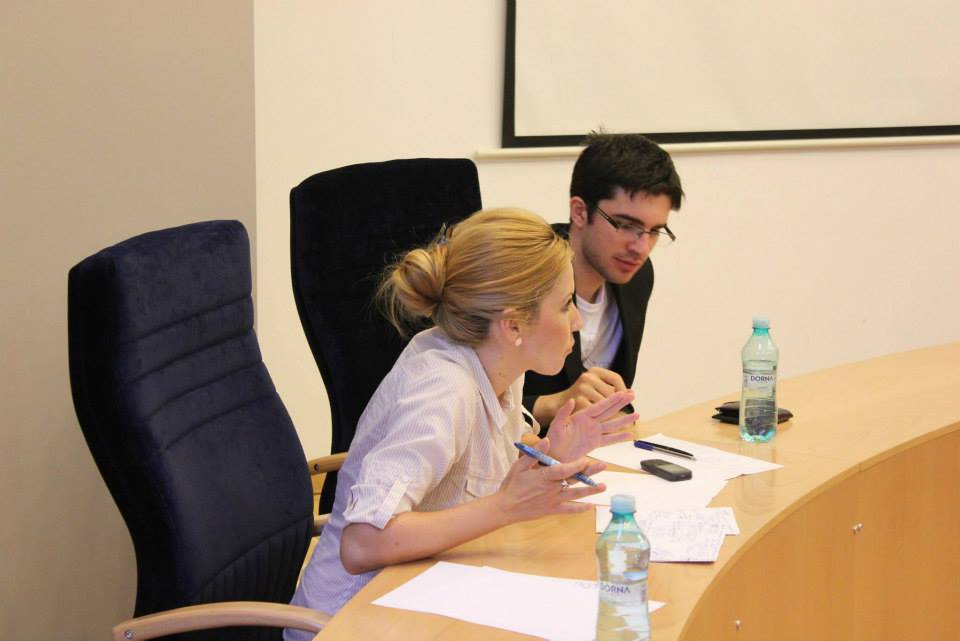
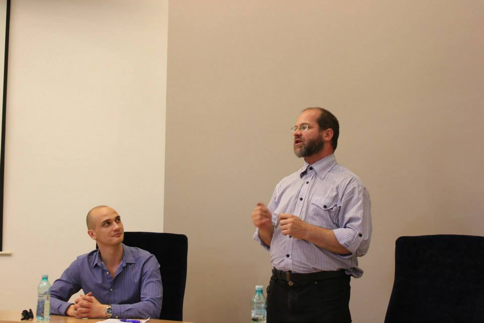

Dezbatere publica Timișoara

miercuri, 19 iunie, ora 18:00 la Universitatea de Vest în amfiteatrul A01
Echipa afirmatoare: Toma Grozavescu (Student Universitatea de Vest) si Dan Ungureanu
(specialist în lingvistică istorică) vs Echipa Negatoare Vlad Icleanu (Student Universitatea de Vest) si
Corina Turșie - doctor în Științe Politice
Moderator, Florina Croitoru, ARDOR
Afirmator 1, Toma Grozavescu
Ar trebui să încep cu o glumă să fac lumea să râdă, iar totul să se destindă, însă mi-am dat seama că problema nu ar trebui să ne facă să râdem deloc. Nu ştiu dacă ştiţi, dar România are cel mai mare număr de accidente raportat la volumul de trafic, are cel mai mare număr de accidente raportat la numărul de kilometri şi în anul 2009, dacă nu mă înşel, 2000 de persoane şi-au pierdut viaţa pe drumuri.
Aceasta este starea de la care plecăm, starea de fapt, de aceea noi spunem că amenzile ar trebui să fie proporţionale cu veniturile: pentru a fi eficiente şi a descuraja oamenii să încalce legea din nou.
Vă vom arăta de ce amenzile ar trebui să fie proporţionale, dar înainte de asta vom spune că această moţiune se aplică deja în România. Înainte să trecem la argumente vom stabili, un pic, limitele conceptelor. Când vorbim de “amenzi” ne referim la amenzile care au ca scop sancţionarea încălcării legii şi să împiedice oamenii să o facă din nou. Vom vorbi astăzi doar de principiu; nu ne legăm, exaxct, de mecanismul prin care se calculează amenda. Aceasta este o problemă foarte tehnică şi o lăsăm în grija legiuitorului.
Spuneam mai devreme că moţiunea se apică deja. Ce trebuie noi să facem este doar să aliniem şi amenzile la asta.
Să fiu moderat, diferenţa între un venit normal în România şi veniturile mari este undeva la 25-30 de ori, dacă iei salariul mediu pe economie şi il compari cu un salariu de director de firmă. Dacă această persoană, dacă directorul de companie intră în inchisoare în fiecare lună el pierde de 25 de ori mai mulţi bani decât altcineva. Deci din punct de vedere economic această moţiune se aplică deja. Atunci de ce nu ar trebui să o aplicăm şi la amenzi?
Vedeţi dumneavoastră, această persoană cu venit mai mare nu işi va cumpăra de 25 de ori mai multă pâine, de 25 de ori mai mult ulei, de 25 de ori mai multă bere la PET. Ei folosesc aceşti bani pentru alte bunuri de lux: trabucuri cubaneze sau o nouă maşină. Şii asta mă duce la al doilea argument: amenzile ar trebui să fie proporţionale cu veniturile ca să fie eficicente.
Chiar si Uniunea Europeană cere statelor ca amenzile să fie juste şi eficiente. Atunci când aplici o amendă de 200 de lei unei persoane cu un venit de 900 de lei tu îi iei din banii pentru pâine, din banii pentru ulei, din bunurile de bază. Insă când aceaşi amendă de 200 de lei este aplicată unei persoane care are un salariu lunar de 20000 de lei, pentru că este un salariu foarte realist pentru companiile mari din România, îi iei din , cum am spus mai devreme, din bunurile de lux, dintr-un trabuc ; nu ştiu dacă ştiţi dar o cutie de trabucuri cubaneze este undeva la 2500 de euro. Aceasta este marea diferenţă şi marea problemă pentru că în România această sumă de 200 de lei poate să însemne lucruri foarte diferite pentru două persoane.
Oamenii înncalcă legea pentru că subminează riscurile. Nu ştiu câţi dintre dumneavoastră aveţi carnete de şofer, dar vreau să vă rog să vă gândiţi că noaptea la ora 3 când nu e nimeni pe stradă ce vă face să staţi totuşi la culoarea roşie a semaforului? Şi nu cred că vă gândiţi că probabil este cineva acolo în întuneric, îmbrăcat în haine mai închise la culoare şi nu îl observaţi şi vă gândiţi: “Măi, nu trec pe roşu că s-ar putea să accidentez pe cineva!”. Vă gândiţi la faptul că s-ar putea să fie un poliţist, undeva după un colţ şi s-ar putea să vă sancţioneze. De aceea trebuie să fie o amendă care, într-un limbaj mai colocvial “să usture” şi pe cel cu venit de 900 de lei şi pe cel cu 20.000 lei pentru a fi resimţită în mod egal şi a fi eficientă.
Cross 1
Vlad: În primul rând, aţi spus că diferenţa dintre un director care ia salariu în România şi un salariat cu venit mic este de 20-30 de ori. Care este diferenţa, ca efect, între acelaşi director şi acelaşi salariat, dacă să spunem amândoi nu poartă centur? Este de 20-30 de ori această diferenţă, ca efect?
Toma: Stai un pic, aici trebuie să ai grijă pentru că confunzi ce trebuie să facă o amendă. Pe de o parte trebuie să sancţioneze încălcarea legii, pe de-o parte sancţionează faptul că niciunul nu a purtat centura. Aceasta este o parte, iar partea cealaltă este să-i facă pe amândoi să-şi pună centura. Şi dacă vor primi amândoi 70 de lei sau 140 de lei, nu ştiu cât este amenda pentru că nu ai purtat centura, cel care are venitul de 700 de lei şi i-ai luat 10% din venit cu siguranţă îşi va aminti şi şi-o va pune, dar cel care are 20.000 nu cred că îi va rămâne întipărit că trebuie să şi-o pună.
Vlad: Deci practic, ceea ce spuneţi e că moţiunea schimbă ceva în starea de fapt. Că oamenii care au venituri mai îşi vor pune centura. Asta spuneţi, nu?
Toma: O să facă amenzile mai eficiente. Da, asta spunem.
Vlad: De ce credeţi că pentru că un om câştigă mai mult, este şi datoria statului să îl taxeze mai mult pe ceva care până la urmă are acelaşi efect? Nu este rezultatul muncii lui că a câştigat de 20 de ori mai mult decât un salariat cu venit minim?
Toma: Bravo lui şi sperăm să fie cât mai mulţi oameni care câştigă 20.000 de lei pe lună, însă aici trebuie să facem distincţia între taxă şi amendă: amenda este pentru om şi pentru fapta lui, deci se sancţionează, cum am spus şi mai devreme, ce ai făcut şi trebuie să te determine ca a 2-a oară să nu mai faci; pe când impozitul este ceva care se aplică tuturor în funcţie de venituri.
Vlad: Dar această pierdere nu este totuşi egală? Dacă şi omul de rând şi salariaţii care au salarii mari plătesc acei 200 de lei nu reprezintă, practic, aceeasi pierdere din partea lor?
Toma: Nu, pentru că o persoană îşi va pierde 20% sau 15% din venit şi cealaltă va pierde 0,2%. Deci practic, aceasta este un fel de discriminare împotriva celor cu venituri mai mici. Şi dacă va fi proporţională amandoi vor pierde 20% .
Vlad: Şi măsura asta va discrimina împotriva celor cu venituri mai mari?
Toma: Va fi o măsură de echitate, să nu zic egalitate. Va face amenzile să fie mai echitabile.
Vlad: Dacă ne uităm la polul opus, la persoana care , să spunem, are 700 de lei salariu şi dacă îi spunem că pentru o contravenţie nu va plăti 200 de lei ca până acum, ci 70 de lei. Nu face acest lucru să îl incurajeze practic pe aceasta să nu poarte centura? Sau să ştie că e pedepsit mai lesne pentru că de data asta nu va purta centura?
Toma: Noi nu spunem să scadă amenzile pentru perosanele cu venituri mai mici. Cred că ele deja sunt calculate după salariu minim pe economie: punctul acela de amendă e 70 de lei sau un anumit procent din salariu. Deci pentru el va rămâne acelaşi. Însă odată ce îi va creşte venitul va trebui să plătească mai mult tocmai pentru a resimţi în mod egal efectul amenzii.
Vlad Icleanu (Negator N1)
Bună tuturor, numele meu este Vlad şi astăzi o să vă demonstrez de ce această măsură despre care vorbim nu este una pe care sa ne-o dorim să o implementăm în România şi, spun eu, în niciun stat care se consideră a fi democratic.
Prin ce prismă vom judeca noi această moţiune, ce propune echipa negatoare: propune principiul egalităţii în faţa legii a tuturor indivizilor. O să vă arătăm pe parcursul discursurilor noastre că această moţiune, în primul rând, încalcă acest principiu în mod clar şi o să vă arătăm unde şi de ce.
Înainte de asta, ce credem noi că ar trebui să facă echipa afirmatoare în această dezbatere ca să o câştige, sunt două lucruri: In primul rand, să ne arate că în starea de fapt există o problemă cu sistemul de amenzi , şi ceea ce identifică ei la nivelul acesta este discrepanţa mare între salariile pe care le iau oamenii şi noi spunem că asta nu este o problemă la nivelul amenziilor ci la nivelul salariilor. Cu ale cuvinte, am putea sa creştem salariul minim pe economie şi ne-am rezolva problema, dacă asta e problema.
Pe de altă parte ei vorbesc despre cum această măsură va avea un efect: îm momentul în care îi vom sancţiona proporţional egal pe doi oameni care au venituri diferite, pentru ca îi va ustura la fel de mult, pe amândoi, din venit, această măsură va avea efect pentru că ei vor purta centura mai departe. Ei bine, eu vă spun că nu e aşa. Uitându-ne pe statisticile din ţările care au implementat deja această măsură , cum ar fi Finlanda, cum ar fi Norvegia, dacă ne uităm la rata accidentelor sau rata încălcării legislaţiei de către cetăţeni nu vom observa o tendinţă de scădere, vom observa că cifrele variază. Într-un an va fi o rată de 30%, după aceea 25%, revenind la 31% . Deci considerăm că această măsură care a fost deja aplicată în anumite ţări europene, a dovedit ca nu produce o schimbare în dacă lumea încalcă sau nu legea. De ce? Pentru că venitul nu este singurul factor care determină un individ să comită o contravenţie. Şi credem că nu este, cu siguranţă, cel mai important. Cel mai important factor poate este educaţia, atitudinea, bunul simţ până la urmă mă determină pe mine, ca cetăţean, dacă port sau nu centură, şi nu venitul în primul rând.
Ce o sa vă demonstrez eu, este în primul rând că acestă măsură este una discriminatorie pentru că încalcă acest principiu de egalitate în faţa legii. Cum? În momentul în care pentru o acţiune care are acelaşi efect, de exemplu: aruncatul unui muc de ţigară pe stradă, doi cetăţeni sunt pedepsiţi în moduri diferite, în momentul acela legea nu mai spune „vă privim egal indiferent de religie, sex, convingeri politice ş.a.m.d.” spune „o să vă privim inegal din punct de vedere al venitului vostru”. Noi credem că venitul unei persoane nu ar trebui să fie un criteriu pe care aceasta este sancţionată cu contravenţie, pentru că reprezintă munca pe care el o depune. Cu alte cuvinte, credem că atât cei care au 700 de lei salariu , pentru că pentru atâta muncesc, cât şi cei care au 1000 euro- 2000 euro salariu, pentru că atâta muncesc, ar trebui să fie sancţionaţi în mod egal. Nu ar trebui să sancţionăm munca lor, ci ar trebui să sancţionăm efectul pe care îl are acea contravenţie pe care ei o încalcă. Dacă efectul acela, stabilim că este unul nociv, unul periculos, îl sancţionăm în mod egal, fără să ţinem cont de venit.
Al 2-lea lucru despre care vreau să vă vorbesc este care sunt, de fapt, dezavantajele pe care le aduce această moţiune. Şi cel mai mare dintre ele este că încurajează corupţia din sistem. În momentul în care un om bogat va fi sancţionat proporţional din salariu, nu va prefera să plătească 2% din salariul lui sau 5% din salariul lui, o sumă care reprezintă mult mai mult decât plăteşte un om obişnuit, va prefera să mituiască poliţistul pe o sumă rezonabilă care este mai mare decât amenda de 200 de lei din momentul de faţă şi nu am rezolvat nimic practic. Nu credem că oamenii bogaţi, când vor fi puşi în faţa acestei amenzi, o sa spună „Bine m-ai prins fără centură, o sa vreau sa plătesc...” 170.000 de euro e cel mai extrem caz din Norvegia pentru o depăşire de viteză, al unui director de bancă. Nu credem că o să plătească acei bani ci credem că va încerca să şantajeze sistemul.
Care este un alt dezavantaj al acestei moţiuni şi un ultim lucru despre care vreau sa vă vorbesc , este că încurajează discrepanţa şi tensiunile între clase sociale diferite. Dacă vrem politici sociale, dacă vrem să nu avem aşa o mare discrepanţă între bogaţi şi săraci într-o ţară , nu un sistem de coerciţiu bazat pe amenzi este soluţia. Suntem de acord cu politici sociale în sensul acesta, nu suntem de acord cu sancţionarea discriminatorie în funcţie de venit in sensul acesta. Credem că în acel caz nu îţi încurajezi cetăţenii să depună o muncă de valoare să devină cetăţeni care au o anumită bunăstare, să încurajezi un nivel de trai în România, credem că în momentul în care munceşti o să fii şi sancţionat pentru acea muncă. În acelaşi timp, credem că, la polul opus, oamenii care câştigă mai puţin vor fi încurajaţi , şi ei sunt cei care trebuie să înţelegem că au gradul de risc cel mai ridicat să comită aceste contravenţii, ei vor fi încurajaţi, sau nu încurajaţi dar vor percepe această contravenţie ca o pedeapsă mai lesne aplicată lor şi aplicată mai dur celor bogaţi.
Din aceste prisme credem că măsura, este în primul rând una discriminatorie şi în al doilea rând ineficientă, deci nu ar trebui să fie aplicată.
Cross 2:
Dan Ungureanu: În economia de piaţă tendinţa este mai degrabă spre egalizarea veniturilor sau spre polarizarea veniturilor ? Diferenţa între cele mai mici salarii în România şi cele mai mari va scădea sau va creşte?
Vlad Icleanu: Pe viitor, fără intervenţia statului, cred că diferenţa va creşte. Sunt de acord cu problema asta, dar nu cred că sistemul de amenzi este locul în care acţionăm eficient asupra ei. Cred că politicile statului, sociale sau de impozitare mai mare a celor care au venituri mai mari, sunt mai corecte în sensul acesta decât un sistem de “impozitare”, până la urmă, pentru a aduce bani la buget, bazat pe contravenţi.
Dan Ungureanu: Aţi vorbiti aici despre poliţiştii care vor fi mituiţi proporţional mai mare de către cei susceptibili să plătească amenzi mai mari. Vorbim mai degrabă despre principii sau mai degrabă despre poliţiştii coruptibili din lumea reală?
Vlad Icleanu: Vorbim despre o realitate care este în România de astazi o problemă, şi anume corupţia din sistem la toate nivelurile. Şi de asta cred că o măsură de genul acesta aplicată în momentul acesta va încuraja mai degrabă corupţia din sistem decât să ducă la o combatere a ei. E o realitate. (Discuţia) este şi la nivel principial, însă (corupţia) este ceva ce trebuie sa admitem că există, se întâmplă.
Toma Grozavescu: Şi atunci crezi că ar trebui să scoatem toate amenzile să nu mai aibă poliţiştii ce aplica să nu mai poată fi mituiţi?
Vlad Icleanu: Nu. Cred că ar trebui să păstrăm amenzile la o cotă unică de amendare, aşa cum este în momentul de faţă, şi cred că ar trebui să îmbunătăţim politicile de combatere a corupţiei din sistem.
Toma Grozavescu: Din ce spui tu mi se pare că vrei să ignorăm o anumită problemă , mi se pare că problema de corupţie e o altă problemă foarte serioasă pe care nu o putem aborda acum, ceea ce vrei tu e că ştii care e problema aceea şi vrei să o ignori. În loc să căutăm metode să o rezolvăm şi pe aceea vrei să o dai la o parte şi să menţinem lucrurile pe principiul “hai că merge şi aşa”.
Vlad Icleanu: Eu cred că e datoria echipei afirmatoare să demonstreze că există o problemă cu sistemul de amenzi în sine, nu cu salariile mici sau cu corupţia din sistem. Dacă sistemul de amenzi, în sine, este greşit principial şi faptic, iar echipa afirmatoare reuşeste să demonstreze chestia asta, e ok. Ce spunem noi aici este că sistemul acesta de amenzi nu s-a dovedit a fi eficient, ba mai mult, nu are niciun efect când îl aplicăm, pentru că avem cazuri: vezi Norvegia, vezi Finlanda; şi că şi principial este greşit.
Toma Grozavescu: Referitor la cazurile în care s-a aplicat deja. De câţi ani s-a aplicat deja?
Vlad Icleanu: Din cunoştinţele mele, înainte de anii 2000. Acum, că în unele ţări e din 1997, în unele din 1999, nu pot spune.

Dan Ungureanu (Discurs A2)
Aici a adus echipa oponentă exemplul Finlandei. Nu ştiu dacă este cel mai fericit exemplu, fiindcă Finlanda este ţara cea mai egalitară din Europa. Ţara în care veniturile cele mai mari şi veniturile cele mai mici sunt cel mai apropiate, toţi finaldezii câştigă la fel de mult.
Introducerea amenzilor proporţionale în Finlanda nu are cum să lase urme, fiindcă disproporţia dintre salarii este invizibilă. Indicele Gini al Finlandei este cel mai mic din Europa. Nu aş vorbi despre chestiuni de aplicare practică, pentru că mi-e mai uşor să vorbesc despre acest subiect ca despre un subiect de principiu.
Care este scopul amenzii? Este scopul de descurajare a contravenientului ca să repete acţiunea comisă. Amenda are scopul de a descuraja, pe de-o parte pe cel care a comis acţiunea, pe de altă parte pe cei susceptibili să comită acelaşi lucru. Ori, a descuraja cu o amendă de 150 de lei pentru depăşirea vitezei între 10 şi 20 de kilometri nu înseamnă acelaşi lucru pentru Huidu şi Găinuşă sau colegul meu Toma, aici de faţă, vânzător la supermarket plătit cu 800 de lei pe lună. Poate ştiţi că Huidu, vedeta Cronicii Cârcotaşilor era un extraordinar de mare star, foarte bine plătit şi n-a reuşit decât să omoare 3 civili cu maşina lui de vedetă TV-
Şi revin la ideea de descurajare. 150 de lei amendă descurajează altfel pe un om cu salariu minim, şi descurajează altfel pe Huidu cu un salariu de 30 de ori mai mare. Ceea ce v-a spus colegul meu, diferenţa de 1 la 30 este abstractă şi v-am adus ceva să o fac mai concretă. Ce înseamnă să ai un salariu de 30 de ori mai mare decât un muncitor de supermarket? Pe 15 ianuarie, când lumea nu şi-a aruncat încă bradul de Craciun, un director de companie a câştigat deja cât un muncitor de supermarket. Pe 15 ianuarie când directorul îşi aruncă bradul de Crăciun el a câştigat atât cât va câştiga angajatul lui în tot anul. Suntem pe 15 ianuarie şi ei plătesc exact aceleaşi amenzi. Ceaa ce descurajează un muncitor de rând o dată, descurajează de 20 de ori mai putin pe directorul de întreprindere.
Nu voi face decât să reiau ceea ce ante-vorbitorul meu a şi spus. Atunci când un director de intreprindere este amendat cu 300 de lei va zice „Ups. Cu ce îmi tunez al doilea Porche? Banii de tunat al doilea Porche s-au dus!”. Mai depăşeşte o dată viteza şi mai plăteşte 300 de lei amendă şi spune „Aoleu, s-au dus şi banii de siliconat sânii amantei!”
De aceea, sugerăm modest că actualele amenzi nu descurajează proporţional pe toţi.
Corina Tursie (Discursul N2)
Colegul meu, Vlad, a pus foarte multă pasiune în a demonta întreaga argumentaţie a echipei afirmatoare şi îl apreciez pentru asta, dar permiteţi-mi totuşi să vă aduc puţin la realitate. Realitatea dată este că România este stat membru al Uniunii Europene, iar astăzi în Uniunea Europeană vorbim despre o strategie în ceea ce priveşte siguranţa rutieră. Iar în cadrul acestei strategii, focusul pe chestiunea comportamentelor coercitive de genul amenzi este undeva în coada listei, în coada priorităţilor UE în ceea ce priveşte măsuri eficiente. S-a demonstrat că nu sunt eficiente.
Vorbim astăzi despre o paradigmă depăşită, cea în care vă aflaţi dumneavoastră, cu părere de rău vă spun, aceasta întrucât vorbim la nivelul UE despre siguranţă rutieră ca despre un element care are 3 componente. Cum putem asigura siguranţa rutieră: în primul rând asigurăm infrastructură de calitate, în al doilea rând garantând autovehicule cu condiţii tehnice bune astfel încât ele să ruleze în siguranţă pe şosea, şi doar în al treilea rând vorbim despre comportamentul responsabil al şoferilor: aici vorbim despre consum de alcool, purtarea centurii de siguranţă, apăsarea pedalei de acceleraţie, despre a trece pe roşu în intersecţii, dar doar în al treilea rând.
Şi atunci paladigma actuală, ca să fim oameni prezenţi, despre care vorbeşte UE este una în care trebuie să identificăm şi alţi responsabili pentru accidentele rutiere; nu putem arunca toată vina în cârca participanţilor la trafic, fie ei pietoni, biciclişti, motociclişti sau şoferi. Nu putem să facem asta. În definitiv, dacă vorbim despre numărul de accidente din România uitându-ne pe cele 3 bariere: infrastructură, condiţia tehnică a maşinilor şi responsabilitatea cetăţenilor participanţi la trafic întelegem foarte uşor de ce stăm atât de prost în toate aceste statistici. E simplu: avem 300 şi ceva de kilometri de autostrad. Spania are 14.000. Majoritatea accidentelor se produc pe drumuri europene, naţionale, comunale, orăşeneşti, unde pentru a depăşi trebuie să trecem pe celălalt sens.
Aş putea să vă întreb despre oportunitatea economică a amenzilor despre care vorbiţi, proporţionale cu veniturile. În cât timp ar trebui să stângem amenzi mari de la cei bogaţi , astfel încât România să recupereze de la cei 300 de kilometri de autostradă la cei 14.000 ai Spaniei şi să garantăm sub aspectul „infrastructură” siguranţa circulaţiei? Acesta ar fi un aspect.
Cel de-al doilea aspect se referă la condiţia tehnică a maşinilor din România: nu e un secret pentru nimeni că avem un parc auto vechi. Programul „Rabla” este o realitate. Dacă nu am fi avut un parc auto vechi nu ar fi fost necesar un asemenea program.
Iar în al 3-lea rând, dacă vorbim despre responsabilitatea rutieră a cetăţenilor, eu personal nu sunt de acord cu măsuri de genul jocurilor cu sumă nulă: statul să câştige cât mai mult, să ia cât mai multe amenzi, iar cetăţenii să fie sancţionaţi pentru orice contravenţie. Nu cred că sunt eficiente. Mai degrabă aş merge pe un joc cu sumă pozitivă: haideţi să facem educaţie civică. S-a întâmplat în alte ţări. Dacă vorbim despre bune practici, comisarul Siim Kallas este vice-preşedintele comisiei europene responsabil de tot sectorul acesta de transporturi, dădea exemplu, acum două zile într-un speech oficial la reunirea Consiliului European pentru securitatea transporturilor, dădea exemplu Danemarca. Şi spunea că în Danemarca există o strategie pentru securitate rutieră care vorbeşte despre o analiză cost-eficacitate realizată asupra principalelor măsuri pentru creşterea siguranţei rutiere în raport cu diminuarea numărului de accidente rutiere cu victime: decese sau victime care suferă leziuni majore. Printre măsurile care au ieşit pe primul loc în această situaţie, în această analiză cost-eficacitate, este o chestiune care ţine de partea tehnică a autovehiculelor: inginerii auto moderne de genul „Keep your distance”, în al doilea rând, iluminarea corespunzătoare a şoselelor – în Belgia până şi autostrada este iluminată complet, iar noi avem o gramadă de străzi în oraşe care nu sunt iluminate – în al treilea rând , gestionarea intersecţiilor periculoase. Pe la mijlocul clasamentului sunt campaniile de informare şi educare civică şi la final ar fi următorul lucru : creşterea pedepselor pentru viteză şi nepurtarea centurii de siguranţă!
Discutie cu publicul:
Public: Este o problemă referitoare la patronii de firme. Toţi banii se duc în contul firmei. Cum calculăm cât a luat acel patron, având în vedere că el poate să declare că a luat banii şi i-a investit înapoi în firmă. Va trebui să facem la fiecare amendă o anchetă socială să vedem de fiecare dată câţi bani vin la el?
Toma Grozavescu: În statele nordice poliţistul are un smartphone pe care introduce CNP-ul şi are acces la declaraţia de venituri pe anul trecut a persoanei în cauză. De acolo calculează procentual valoarea amenzii.
Dan Ungureanu: Aici am eu răspunsul mai la îndemână. În Franţa, de exemplu, există impozitul pe nivelul de trai. Poţi să nu ai niciun fel de sursă de venit declarată, dar dacă ai vilă cu piscină ţi se va calcula actuarial că ea corescunde unor anumite venituri lunare, chiar dacă tu pari a trăi din respirat adânc aerul înmiresmat.
Public: Cum este cazul impozitului mai mare pe a 2-a casă? Cam acesta ar fi sistemul?
Dan Ungureanu: Da. Dacă cineva trăieşte pe picior mare legea prezumă că are şi venituri mari şi îl impozitează corespunzător, fără să se întrebe de unde şi cum a obţinut respectivele imobile.
Vlad Icleanu: Cred că pentru situaţia cu directorul foarte bogat care nu îşi declară foarte multe venituri , e complicat pentru el să facă acest lucru. Pentru că dacă banii aceia rămân în firmă sunt vizibili fiscal. Şi fiscul controleză des marile corporaţii. Practic el e pus să aleagă între să se plătească puţin ca să poată plăti amenda mai puţin şi să rişte să facă evaziune fiscală, sau să se plătească la nivelul la care ar trebui să se plătească şi atunci întradevar va plăti amenda mai mare. Deci cred că există mecanisme fiscale care reglementează alegerea aceasta a directorului de firmă care decide să învârtă nişte bani. Nu e chiar aşa de simplu.
Public: Eu doresc să felicit tabăra de dreapta, din dreapta pentru că au discutat mai mult despre siguranţa în trafic şi mult mai puţin despre rezolvarea unor aşa zise "inechităţi sociale". Pedepsirea unor merite a unora care au reuşit să ajungă directori şi nu neapărat sunt vinovaţi pentru asta.
Dan: Amenzile nu sunt taxe cum supozitoarele nu sunt plombe şi toate comparaţiile acestea sunt întrucâtva naive. În ceea ce priveşte îmbunătăţirea condiţiilor tehnice ale maşinii, această măsură este singura dovedită ca din păcate neavând nicun rezultat. Marea Britanie din cauză că are un climat ploios a introdus asfaltul poros. Prin asfaltul poros ploaia pătrunde, curge, iar asfaltul nu se umezeşte niciodată şi pe timp de ploaie se poate circula cu 100 de mile pe oră .
Atunci când s-a introdus acest asfalt de tehnologie înaltă în Franţa, francezii şi-au dat seama că pot circula cu mare viteză pe ploaie , au început să circule orbeşte şi numărul de accidente a crescut.
După ce s-a introdus airbag-ul oamenii şi-au zis "Am airbag. Nu mi se poate întâmpla nimic " şi numărul de accidente a rămas constant.
Toate aceste măsuri tehnice au un plafon de eficacitate care nu depăşeşte 5-10 ani, iar după aceea tot măsurile coercitive trebuie să intervină.
Corina: Dacă îmi permiteţi, dacă spuneţi că numărul de accidente a rămas constant negaţi informaţia de la care am plecat conform căreia România este singura ţară care nu şi-a redus numărul de accidente. Înseamnă că şi Franţa e în aceeaşi situaţie. V-aş cotrazice: Franţa şi-a redus numărul de accidente care au generat victime.
Dan Dar care au fost măsurile care au redus numărul de victime? Nu putem vorbi de faptul că au introdus radare automate acum 10 ani ?
Corina: Nu vorbeam despre măsuri, vorbeam despre afirmaţia dumneavoastră conform căreia cu toate aceste măsuri, francezii au continuat să meargă cu viteză.
Dan: Asta s-a întâmplat în anii 1970 pentru o scurtă perioadă.
Vlad: Cred că ce încerca să spună domnul profesor, mai degrabă, este că orice îmbunătăţire tehnică, la un moment dat aduce efectul phihologic de confort asupra pasagerilor unei maşini. Şi că cumva aceste lucruri se balansează pentru o scurtă perioadă de timp. Nu mi se pare relevant dacă numărul de accidente din Franţa a crescut sau nu. Cred că doamna profesoară are dreptate când spune că număul de accidente din România este ridicat nu din cauza inconştienţei şoferilor ci din cauza infrastructurii, în primul rând. Dar până la urmă ce înseamnă "siguranţa circulaţiei" este un ansamblu de măsuri. Nu este doar mecanism de siguranţă, sau infrastructură sau comportament. Cred că amenzile, dacă ele sunt vizate de moţiune, se referă la acestă ultimă parte, adică comportamentul persoanelor şi din prisma asta ar trebui să evaluăm dacă sunt eficiente sau nu, la nivelul comportamentului. Pentru că celelalte sunt oarecum complementare şi nu depind de ce poate face o amendă ca să construiască un drum sau să îmbunătăţească un sistem de siguranţă al unei maşini.
Public: Către cine vrea să răspundă: în ce măsură proporţionalitatea amenzilor cu veniturile ar fi mai eficientă faţă de proporţionalitatea amenzilor cu orice alt factor, de exemplu cu contravenţia, adica actul care este sancţionat, sau altceva, dar actul care e sancţionat ar fi prima idee care îmi vine în minte.
Vlad: În momentul de faţă, amenzile sunt gândite pe actul pe care l-ai săvârşit, practic. Aşa se calculează punctul acela de penalizare.
Public: - Cred că mă aşteptam să răspundă mai degrabă echipa afirmatoare, întrebarea mea era în ce măsură ar fi asta mai eficient.
Dan: Amenzile acestea proporţionale cu paguba făcută au fost introduse în codul lui Hammurabi - cine a furat o oaie, să restituie 5 oi – era măsura pagubei înmulţită cu posibilitatea de a-l prinde pe făptaş. Ori, pe vremea lui Hammurabi, diferenţele de venituri nu erau foarte mari. Noi astăzi, psihic, nu percepem riscul de a accidenta pe cineva daca mărim viteza, ci percepem riscul de a ne întâlni cu Garcea, care ne va da o amendă. Ori, atunci când cineva ştie că va plăti o sutime din venit ca amendă, şi nu a 20-a parte din venit, va percepe mai estompat acest risc de accident. Psihologia oamenilor e un factor care trebuie integrat aici. Când ştii că ai de dat banii de pâine şi curent pe amendă, eşti mai prudent, când ştii că ai de riscat banii de poker la Las Vegas, esti mai imprudent.
Public: Eu nu ştiu dacă vreau s-o iau chiar aşa, pentru că altfel mi se pare că merge într-o altă direcţie, şi vreau şi răspunsul tău, Vlad, dar vroiam să adaug că îmi sună foarte mult a o altă dezbatere care era despre pedeapsa capitală, în care întrebarea care se ridica era: bine, dar în momentul în care omul acţionează împotriva legii, comiţând un accident, de exemplu, în ce moment din când nu pune piciorul pe frână - pentru că nu a dormit, a consumat alcool sau a răspuns la telefonul mobil - se va opri să se gândească: „Stai, amenda este proporţională cu venitul meu!”. Deci, de fapt ideea asta că atunci când comiţi o infracţiune stai să te gândeşti care va fi exact pedeapsa cu care vei fi sancţionat, nu îmi este foarte clară în practică.
Toma: Cred că te vei gândi, sau va avea efect amenda. Poate va avea un efect mai mare a doua oară, după ce ai primit-o o dată, a doua oară când vei fi la un chef şi îi vei spune prietenului tău: „Nu, acum beau doar apă, că am venit cu maşina!”. Când el vine cu coktail-ul sau cu berea la tine, înainte să pui mâna pe ea, cred că te vei gândi că totuşi, n-ai vrea să dai 10.000 de euro amendă.
Moderator: Eu aş dori să spun ceva în legătură cu prima ta întrebare, referitor la dacă pedeapsa trebuie să fie în conformitate cu contravenţia, aş dori să clarific ceva. Pentru depăşirea limitei de viteză, de exemplu, există mai multe praguri. Dacă depăşeşti cu între 5 si 10 kilometri pe oră iei un punct penalizare, dacă depăşeşti cu între 11 si 20, iei 2 puncte penalizare şi tot aşa, culminând cu dacă depăşeşti cu peste 50 de kilometri viteza pe acel tronson, ţi se ia permisul. Deci există deja anumite praguri, în funcţie de gravitatea contravenţiei, deci nu ştiu dacă neapărat puteam vorbi despre asta.
Corina: Aş dori să fac o observaţie: e adevărat, ţine de psihologia individuală. Spre exemplu eu, când mă urc la volan, îmi pun centura de siguranţă şi nu beau, nu pentru că mi-e teamă că mă voi întâlni cu Garcea, ci pentru că nu vreau să mor, pentru că vreau să am deplinătatea simţurilor mele, vreau să fiu lucidă - mă gândesc la lucruri de genul acesta. Da, de la om la om variază lucrurile, dar eu aşa gândesc. Şi presupun că lucrurile despre care vorbeam că ar funcţiona în Danemarca, precum campanii de informare, de educare, de responsabilitate civică, ar cam trebui să funcţioneze peste tot, atunci când oamenii se obişnuiesc să gândească astfel. Adică nu mă gândesc mai întâi la banul pe care îl scot din buzunar, ci mă gândesc mai degrabă că aş vrea să îl salut pe Garcea şi a doua oară pe tronsonul acesta, pentru că dacă am un accident şi mor, nu-l mai salut deloc.
Public: Aş vrea şi eu să zic că în niciun caz dacă nu ar exista amenzi deloc, nu m-aş sui la volan şi m-aş apuca să calc lumea pe trecere de pietoni, doar aşa, pentru că oricum nu sunt amenzi. Nu putem porni de la premisa că dacă avem bani, nu mai avem şi conştiinţă, sau nu mai avem instinct de conservare.
Toma: Cred că sunt de acord, nu am merge, sau cei care au carnet nu ar merge cu 200 de kilometri pe oră tot timpul. Însă atunci când semaforul e pe galben şi eşti seara în oraş, cred că de multe ori se întâmplă să o calci ca să-l prinzi, nu? O dată trebuie să se întâmple ca să loveşti pe cineva care trece pentru că vede că ai luat roşu, şi dauna aceasta nicio amendă sau sancţiune nu o va putea recupera.
Public: Eu zic că niciodată, dacă unei persoane cu Ferrari îi luaţi carnetul, nu va fi foarte bucuros să meargă cu RATT-ul. Luaţi-i carnetul şi gata. Asta ar trebui făcut pentru oricine, indiferent de venituri.
Toma: Nu poţi să îi iei carnetul omului dacă a depăşit cu 10 kilometri. Acum a rămas discuţia foarte mult la partea de amenzi rutiere, însă când vorbim de amenzi pentru deranjarea liniştii publice, de exemplu, ce facem? Acolo chiar este vorba despre asta. Poţi să ai vecini care, în fiecare marţi seara, dau petreceri. Acolo nu se mai gândesc că pot să moară din cauză că nu le mai funcţionează ficatul. Sunt sigur că dacă amenda, a doua oara, a treia oară, va fi mai mare, sau poate chiar prima va fi mai mare, se va gândi când va umbla la volum.
Vlad: Şi de fiecare dată, când îşi fac bugetul pentru petrecere, îşi pun băutura, mâncarea şi amenda.
Public: Ce păcat că cei foarte bogaţi stau la case care au curţi foarte mari.
Toma: În România, persoanele cu venituri foarte mari încă au rămas în centrul oraşului, nu s-a întâmplat ca în alte state, să stea la margine. La noi încă cei cu venituri mai mari stau în centru. De aceea şi chiriile sunt mult mai mari în zona Unirii, Centru, decât în rest.
Public: Cred că afirmarea a venit cu această propunere în dezbatere pentru că există o legătură între venituri şi comportamentul în trafic. Şi întreb negarea: există această legătură?
Vlad: Eu cred că există o legătură, dar cred că există o gramadă de factori care influenţează cum ne comportăm în trafic sau cu vecinii noştrii. Nu cred că banii sunt cei care dictează, în principal, dacă o să facem gălăgie sau dacă o sa apăsăm pedala de acceleraţie. Cred că da, pot fi un factor, dar este unul "mic", să spun aşa. Eu cred că cel mai important factor în a ne comporta împotriva legii este educaţia, bunul nostru simţ şi respectul pe care îl avem pentru noi şi cei din jurul nostru. Şi de asta , un sistem de amenzi care, după cum spunea Teo, unora li se ia banii de pâine şi unora banii de poker , transformat în ce până la urmă? Le luăm ambelor categorii banii de poker sau ambelor categorii banii de pâine; mi se pare inegal pentru că aceste categorii diferite depun un volum de muncă diferit. Cu alte cunvinte, mi se pare mai O.K. cum este în momentul de faţă pentru că dacă o persoană lucrează în valoare de salariul minim pe economie pentru aceasta să fie sancţionat egal ca şi sumă cu o persoană care depune o muncă de 20 de ori mai mare pentru un salariu poate de 20 de ori mai mare.
Dan: Aici aş interveni nu în numele meu, ci în numele celui mai avizat cunoscător în domeniul valorii sociale a muncii, şi anume miliardarul american Warren Buffett, care a spus şi îl citez: " Este foarte ciudat pentru mine (prin asta voia să spune "îmi e silă") că trăiesc într-o societate în care munca pompierilor, a învăţătorilor este retribuită foarte zgârcit, iar munca celor care ştiu să calculeze diferenţele între valoare pe termen scurt şi valoarea pe termen lung a acţiunilor e retribuită cu miliarde ", se referea la el însuşi. Şi întradevăr, toată dezbaterea aici rezidă. Dacă întradevăr munca e retribuită în raport cu valoarea ei pentru societate atunci trăim în cea mai bună lume din lumile posibile. Dacă o parte din diferenţele dintre salarii sunt datorate unor factori de nedreptate socială sau de noroc sau de tradiţie şi istorie. Atunci intrăm în altă dezbatere.
Corina: Din punctul meu de vedere miezul dezbaterii nu constă în chestiunea aceasta, ci mai degrabă în eficienţa amenzii ca modalitate de a asigura siguranţa rutieră.
Toma: Şi cred că s-a uitat foarte mult sau se uită starea în care suntem. Chiar să fim primii în topuri, din păcate nişte topuri negative nu e deloc de lăudat. Şi dacă lăsăm lucrurile cum sunt acuma efectiv băgăm mâinile în buzunar şi ne întoarcem cu spatele că nu putem să facem nimic. Sunt de acord că există şi alte moduri de a rezolva problema, şi infrastructura sigur joacă un rol important, dar cum noi nu suntem "policy makers" la Bruxelles sau Bucureşti ce ar trebui să facem? Pentru că în partea asta putem face nişte lobby şi e un lucru pe care noi îl putem îmbunătăţi, dacă se dovedeşte , şi cred că noi am facut asta, că poate să fie eficient. E un lucru care poate fi făcut şi de noi, pe când celelalte au nevoie de mulţi bani şi probabil cu jumătate de kilometru de autostradă finaţezi toată tehnologia de implementare a unui sistem de amenzi proporţionale : smartphone-urile . E o modalitate de a rezolva problema asupra căreia noi putem acţiona şi de aceea credem că ar trebui să facem ceva.
Corina: Permite-mi să-ţi spun că nu suntem pe ultimul loc în Europa la accidente soldate cu victime. M-am documentat pe site-ul Directoratului General de Transport care are o statistică de la nivelul anului 2010, sunt cele mai recente date. UE are o strategie care spune că din 2000 până in 2020 trebuie să fie reduse accidentele rutiere soldate cu victime la jumătate. Din 2000 până în 2009, în România a urcat constant cifra numărului acidentelor soldate cu victime, însă în 2010 România a început să scadă, fără amenzi proporţionale. Cu amendă unică calcuată la nivelul salariului minim pe economie.
Am scăzut cu 9% în 2010, faţă de 2009, iar media UE este de 9% deci suntem în medie. Mai prost decât noi stă Portugalia care are un procent de doar 0,2% de scădere a numărului accidentelor şi mai e cazul statelor mici: Cipru, Malta; care se stagnează, ele fiind mici şi statisticile pot oscila.
Dan: Am avea o explicaţie pentru asta. După cum ştiţi butanda aceea despre statistici: sunt ca bikini - descoperă aproape tot şi ascund esenţialul. In 2008, în septembrie, poate ştiţi că a început în SUA şi s-a extins spre Europa şi România criza economică. În 2009 au fost executate silit un număr foarte mare de automobile cumpărate în leasing. Numărul de automobile deţinute de români a scăzut. Cu cât? Cu numărul de accidente care a scăzut.
Corina: Aţi făcut corelaţia statistică? E semnificativă acestă corelaţie?
Dan: Cei de la catedra de statistică sunt invitaţi să-şi ascută creioanele. Eu cred că da.
Public: Echipa negatoare a dat foarte multe exemple de ţări care au aplicat amenda proporţională, care sunt de fapt extrem de egalitare, mai exact ţările nordice. Aş vrea să întreb echipa negatoare dacă cunoaşte exemple din Europa de Est care au aplicat această măsură. Dacă nu cunosc, de ce, dacă da, care?
V: Nu există ţări din Europa de Est, din cunoştinţele mele, care au aplicat această măsură, cred că singurele ţări din lume care au aplicat măsura asta sunt cele nordice despre care vorbim, şi tocmai faptul că ele au o discrepanţă socială între clase foarte mică mi se pare că e în avantajul nostru, înseamnă că acolo cetăţenii plătesc aproape aceeaşi amendă, indiferent că se consideră săraci sau bogaţi, pentru că sunt relativ pe acelaşi prag. De asta eu cred că pe un sistem social care într-adevăr are egalitatea realizată în proporţii mari între cetăţeni ar merge un sistem de amenzi proporţionale, pentru că până la urmă nu modifică mare lucru.
C: Mai mult decât atât, dacă îmi permiţi, există şi argumentaţia prin care putem face o corelaţie între, spre exemplu, cota unică de impozitare care există în România, şi s-a făcut discuţia legată de impozitare diferenţiată a veniturilor, respectiv amenda unică sau amenda proporţională cu veniturile. Într-o societate precum cea românească, a fost acea întreagă discuţie politico-economică, şi s-a considerat că dacă s-ar merge pe impozite diferenţiate, aşa cum este în România în prezent, nu vom face decât să creştem economia subterană. Oamenii cu venituri mari, decât să ofere mai mulţi bani din impozite statului, mai degrabă ar încerca să se eschiveze, să nu-şi declare afacerile, şi nu am face decât să mergem în economia subterană. Într-o similaritate cu ideea de amenzi proporţionale sau amenzi unice, a argumentat deja Vlad, probabil s-ar ajunge la acelaşi lucru, adică s-ar ajunge la „know-how-ul românesc”: cunosc pe cineva care cunoaşte un poliţist care mă scapă de amendă.
Public: În situaţia asta, din punctul meu de vedere, dezbaterea vis-a-vis de amenzile proporţionale nu e de fapt foarte reală, pentru că ţările profund egalitare chiar nu oferă o alternativă, şi atunci ar trebui să căutăm o dezbatere reală în mediul propice unei dezbateri reale, adică într-un mediu în care discrepanţa între venituri chiar există şi chiar este mare, şi atunci aş vrea să întreb de ce să nu încercăm să aplicăm o astfel de măsură, pentru că până la urmă, în societăţile acelea pilonii infrastructurii deja există, Norvegia nici nu e membră a Uniunii Europene, dacă nu mă înşel, dar totuşi stau foarte bine la capitolul ăsta, maşini frumoase şi deştepte au, prin urmare rămâne problema responsabilizării, pe care amenda proporţională nu o rezolvă pentru că nu are ce să rezolve. În schimb, în Europa de Est, pilonii aceştia doi stau foarte slab, şi atunci da, aspectul responsabilizării trece de fapt în prim plan, şi acolo trebuie să lucrăm constant, pentru ca acela, în fond şi la urma urmei, durează cel mai mult. Ai 20 de ani să construieşti o autostradă, dar responsabilitatea nu se construieşte într-un timp pe care poţi să-l decizi. La asta trebuie lucrat şi trebuie experimentat foarte mult până să se ajungă la o soluţie concretă, ca să zic aşa.
Dan: Finlanda e un exemplu foarte bun, e ţara cea mai puţin coruptă din Europa, prima care a introdus în Europa votul femeilor, acum mai bine de 100 de ani, şi legile finlandeze ne-ar putea servi mai curând de exemplu, decât ca excepţie care să confirme regula.
Vlad: Eu nu sunt de acord. Eu cred că Finlanda e un exemplu de viitor, dar care nu se poate aplica în momentul de faţă la România, tocmai din cauza discrepanţelor care există. De ce cred că nu există sistemul de amenzi proporţionale implementat într-un stat est-european, este pentru că lumea e conştientă de discrepanţele şi inegalitatea pe care o crează. Într-un sistem precum al Finlandei ne putem permite să facem asta, pentru că cetăţenii nu se simt atât de afectaţi, într-un sistem de ţară est-europeană nu ne putem permite să facem asta. În plus, dacă această măsură e gândită economic, cu alte cuvinte, vrem să scoatem mai mulţi bani pe care să-i aducem la buget, niciodată statul n-o să acţioneze la nivelul amenzilor, pentru că aici în primul rând s-ar putea să nu încaseze amenzile acelea pentru că cetăţenii au înţeles mesajul si nu comit infracţiunile şi în al doilea rând s-ar putea să fie mituiţi poliţiştii, şi preferă să aplice un alt sistem pentru a lua banii de la cei bogaţi, care se numeşte impozit, dacă chiar au nevoie să aducă bani la buget.
Toma: Sunt total de acord cu asta, şi prea des echipa negatoare a pus semnul de egalitate între amendă şi impozit. Chiar nu au nicio legătură. De exemplu, pentru că vorbeaţi de ce să fie proporţionale, asigurările de maşină, de viaţă, de ce diferenţiază în funcţie de venituri? La o maşină de 100 000 de euro, asigurarea va costa X, iar la un Logan de 8 000 de euro, va costa Y. La fel şi la asigurările de viaţă, de ce pentru unele persoane sunt foarte scumpe, şi pentru alte persoane nu? Ca să mă întorc la exemplul maşinii, probabil şi preţil maşinii contează, sunt de acord, dar companiile de asigurări ştiu ce fac pentru că trebuie să facă profit. Eu cred că în coeficientul lor atunci când calculează costul asigurării e şi un factor de risc, probabil că dacă persoana respectivă şi-a permis să dea 100 000 de euro pe o maşină care are 15 air-bag-uri şi nu păţeşte nimic, poate e mai înclinată să apese pe pedală.
Corina: Sau poate e mai scumpă reparaţia unui BMW decât a unui Logan.
Toma: E o parte, da.
Vlad: Factorul de risc despre care vorbeşti, mi se pare că e calculat de ei prin statisticile accidentelor despre care vorbim noi, de anul trecut, pe categorii de vârstă. Chiar căutam astăzi pe internet, pe site-ul Institutului Naţional de Statistică, şi am găsit nişte grafice interesante cu accidente şi categorii de vârstă. Unde se realizează, într-adevăr, diferenţierea, e nu la maşinile care costă puţin şi maşinile care costă mult, pentru că aici într-adevăr reparaţiile costă diferit, ci la categoriile de vârstă. Şi anume, eu o să plătesc o asigurare mult mai mare pentru maşina mea decât Flo (Florina Croitoru, moderator), ea o să plătească mai puţin. Şi explicaţia concretă aici este aceea că s-a văzut că se întâmplă – s-a văzut că gradul de risc pentru persoanele tinere care conduc maşini e mai mare, decât pentru persoanele mai puţin tinere.
Toma: Şi între bărbaţi şi femei e o diferenţă.
Dan: Tinerii conduc cel mai iresponsabil.
Vlad: Exact, este bazat pe faptul că cunoaştem lucrul acesta, s-a întâmplat, avem statistici care ne spun asta.
Dan: Cele mai multe accidente sunt produse de maşinile în care este un tânăr şofer la volan, şi care are drept pasageri tot doi adolescenţi, care sunt ca un fel de galerie: „Calc-o , calc-o, eşti bun!”. Ăsta este coktail-ul cel mai periculos, după părerea asiguratorilor.
Corina: Dar, intuitiv, tinerii au venituri mici. Atunci , dacă punem amenda proporţională cu veniturile, chiar nu rezolvăm problema, căci ei sunt cei care fac accidente, dupa statisticile acestea.
Dan: Amenda poate fi convertită cu puşcăria. În puşcărie adolescenţii sunt foarte bine văzuţi.
Toma: Dacă nu mă înşel, în ţările care au aplicat această amendă proporţională întreadevăr etalonul este o zi de puşcărie: cât pierde omul dacă nu poate să lucreze şi stă închis. Şi dacă nu ma înşel poţi să şi alegi. Dacă iei 3 zile de închisoare amendă, poţi să stai 2 zile la inchisoare şi o zi o plăteşti.
Vlad: Legat de cazul directorului de bancă despre care am vorbit care a plătit 170 mii de euro amendă pentru depăşirea vitezei, pentru că în anul precedent încasase undeva la 10 milioane de euro, el a făcut în judecătorie să stea la închisoare decât să plătească banii aceia. A cerut judecătorilor să-l bage în închisoare în loc să plătească amenda şi aceştia au refuzat.
Corina: Le pasă şi oamenilor bogaţi de bani.
Public: Eram curioasă dacă v-aţi gândit, în practică, cum se va implementa proporţional? Efectiv pe un exemplu practic , cum e o economie ca a noastră unde o mare parte din economie de fapt e invizibilă. Exemplu manelistului care face petrecere în bloc şi poliţia nu îl sancţionează pentru că îi este frică, nu doar de el, ci de toţi prietenii lui şi 90% din veniturile lor sunt necunoscute statului. Cum se implementează în cazurile acestea de economie ascunsă?
Dan: Asta ar impune ca statul să perceapă toate taxele, să îngrădească evaziunea fiscală şi să îl supravegheze puţin pe "Garcea". Ori faptul că există evaziune fiscală , că o parte din economie este gri şi că miliţienii îşi rotunjesc salariile, acestea nu sunt lucruri de principiu. Acestea oricum trebuie învinse.
Public: Cred că echipa afirmatoare vrea abs-uri la căruţă. Mai întâi trebuie rezolvate nişte probleme structurale ale ţării şi despre ce vorbiţi dumneavoastră e destul de avansat. Câtă vreme îţi trebuie 15 adeverinţe ca să scoţi un cazieri şi să faci un buletin, treaba cu veniturile care să se vadă exact şi să se poată amenda proporţional mi se pare nerealistă.
Toma: Tocmai de aceea scoul acestei dezbateri este, aşa cum am menţionat şi la început, să vorbim de principii. Scopul a fost altul, efectiv să vedem pe când vom avea condiţiile necesare ca să implementăm acest gen de amendă. Nu trebuie neapărat de mâine.
Vlad: Aş vrea să răspund concret la întrebarea Teodorei. Dacă considerăm că avem un sistem perfect în care nu avem evaziune fiscală , cum am face acest lucru, şi cum o fac finlandezii de exemplu, e că pentru veniturile cele mai mici proporţia este cea mai mare , adică pentru un venit de 700 de lei proporţia este 10% şi aceasta scade pe eşaloane de venit. Cu alte cuvinte oamenii bogaţi nu plătesc aceaşi proporţie cu oamenii săraci, plătesc mai puţin însă sumele sunt mult mai mari.